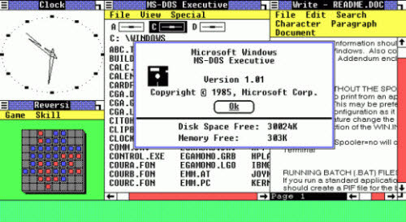

Giới thiệu về hệ điều hành Windows
Microsoft Windows (hoặc đơn giản là Windows) là tên của một họ hệ điều hành dựa trên giao diện người dùng đồ hoạ được phát triển và được phân phối bởi Microsoft. Nó bao gồm một vài các dòng hệ điều hành, mỗi trong số đó phục vụ một phần nhất định của ngành công nghiệp máy tính.
Microsoft chọn tên Windows để đặt tên cho hệ điều hành máy tính huyền thoại của mình vì những nội dung của hệ điều hành hiển thị trên màn hình trong những cửa sổ (window) khác nhau.
Giao diện của những hệ điều hành ban đầu cực kì đơn giản, tương tác với người dùng chủ yếu qua các dòng lệnh đơn thuần. Những phiên bản gần đây đã có sự cải thiện rõ nét: giao diện tương tác người dùng đồ họa đã bắt đầu phát triển.
Sự phát triển của hệ điều hành Windows
-
1985
Windows 1.0

Thực tế, đây chỉ là một phiên bản của MS-DOS được trang bị thêm giao diện người sử dụng.
-
1987
Windows 2.0

Phiên bản 2.0 là hệ điều hành đầu tiên được trang bị thêm ứng dụng văn phòng Word và Excel.
-
1990
Windows 3.0

Phiên bản 3.0. Đây được xem là hệ điều hành có nhiều cải tiến đáng kể và thoát hoàn toàn khỏi cái bóng của MS-DOS. Chính vì điều đó, hệ điều hành này đã trở thành phiên bản phổ biến đầu tiên của hệ điều hành này.
-
1992
Windows 3.1
Windows 3.1 không chỉ chỉnh sửa các lỗi cần thiết mà còn là phiên bản đầu tiên mà Windows hiển thị các font TrueType, bộ bảo vệ màn hình (screensaver) và hoạt động kéo và thả.
-
1993
Windows NT
Một sản phẩm kế tiếp dành cho khối doanh nghiệp của Windows là Windows NT (NT là viết tắt của cụm từ New Technology). Phiên bản năm 1993 là một hệ điều hành 32-bit đúng nghĩa được thiết kế cho các tổ chức có kết nối mạng.
-
1995
Windows 95
Là phiên bản đầu tiên của Windows có sử dụng nút Start và menu Start, Windows 95 có Taskbar, các shortcut trên desktop, kích phải chuột và các tên file dài, nhất là trình duyệt web Internet Explorer của Microsoft. IE 1.0.
-
1998
Windows 98
Hỗ trợ cho USB, chia sẻ kết nối mạng và hệ thống file FAT32, là những bước tiến đáng giá của Windows 98.
-
2/2000
Windows 2000
Với 5 phiên bản khác nhau: Professional, Server, Advanced Server, Datacenter Server và Small Business Server, Windows 2000 kết hợp chặt chẽ các tính năng từ Windows 95/98 để tạo nên một giao diện đẹp mắt và tinh tế.
-
6/2000
Windows Me
Windows Me đã nâng cấp các tính năng Internet và multimedia của Windows 98, bổ sung thêm ứng dụng Windows Movie Maker, giới thiệu tiện ích System Restore. Hạn chế của Windows Me là hệ thống dễ bị treo.
-
2001
Windows XP
XP là sự giao thoa tốt nhất giữa các phiên bản Windows 95/98/Me với thao tác 32-bit của Windows NT/2000 và giao diện người dùng được tân trang lại.
-
2007
Windows Vista

Phiên bản Windows Vista đã phát triển các tính năng của XP. Đồng thời, Windows Vista cũng bổ sung thêm sự bảo mật, độ tin cậy, chức năng truyền thông số được cải thiện và giao diện đồ họa người dùng Aero 3D đẹp mắt.
-
2009
Windows 7
Cải thiện những hạn chế trong Windows Vista, Windows 7 chinh phục người dùng với những tính năng vượt trội trong User Account Control, taskbar, Gadget trực tiếp lên desktop, chế độ Aero Peek, hoạt động Aero Snaps mới.
-
2012
Windows 8
Một hệ điều hành lai (hybrid OS), có thể hoạt động tốt trên cả thiết bị cảm ứng và không cảm ứng, bỏ đi nút Start, giao diện người dùng đổi từ Metro sang Modern,...
-
2015
Windows 10
Đánh dấu một đỉnh cao mới: lần đầu tiên các thiết bị cảm ứng hay không đều sử dụng chung được với nhau. Giao diện được thay đổi, Windows Title được tích hợp vào trong Menustart, Settings đặc biệt thay thế Control Pannel là những “điểm cộng” xuất sắc của Windows phiên bản mới nhất này.
Ưu điểm
Tính tương thích cao: Vốn là một nền tảng chiếm thị phần sử dụng cao nhất hiện nay nên cũng không có gì khó hiểu khi hầu hết các nhà sản xuất đều đầu tư xây dựng phần mềm cũng như sản xuất phần cứng hỗ trợ cho hệ điều hành Windows.
Dễ sử dụng: Các phiên bản hệ điều hành Windows tiếp theo luôn được kế thừa những tính năng cơ bản của phiên bản tiền nhiệm, giúp người dùng dễ dàng làm quen và sử dụng.
Bảo mật: Dù không bảo mật toàn diện như: Linux, Mac OS … nhưng Microsoft luôn cung cấp cho người dùng những gói nâng cấp và cập nhật miễn phí để tối ưu sự ổn định và khả năng bảo mật của thiết bị.
Phong phú ứng dụng: Lượng lớn người dùng Windows luôn thu hút các nhà viết ứng dụng nên so với các hệ điều hành khác, lượng ứng dụng của Windows luôn ở mức phong phú cao hơn.
Hỗ trợ tối đa cho màn hình cảm ứng (Windows 8 trở lên): Từ phiên bản Windows 8 trở nên, nền tảng Windows đã được thiết kế để hỗ trợ tốt cho các thiết bị màn hình cảm ứng.
Nhược điểm
Lượng người dùng đông đảo cũng là mục tiêu thu hút sự quan tâm của các tin tặc, hacker,… .Do đó, các virus, phần mềm gián điệp, mã độc… đều được viết để hoạt động trên nền tảng này.